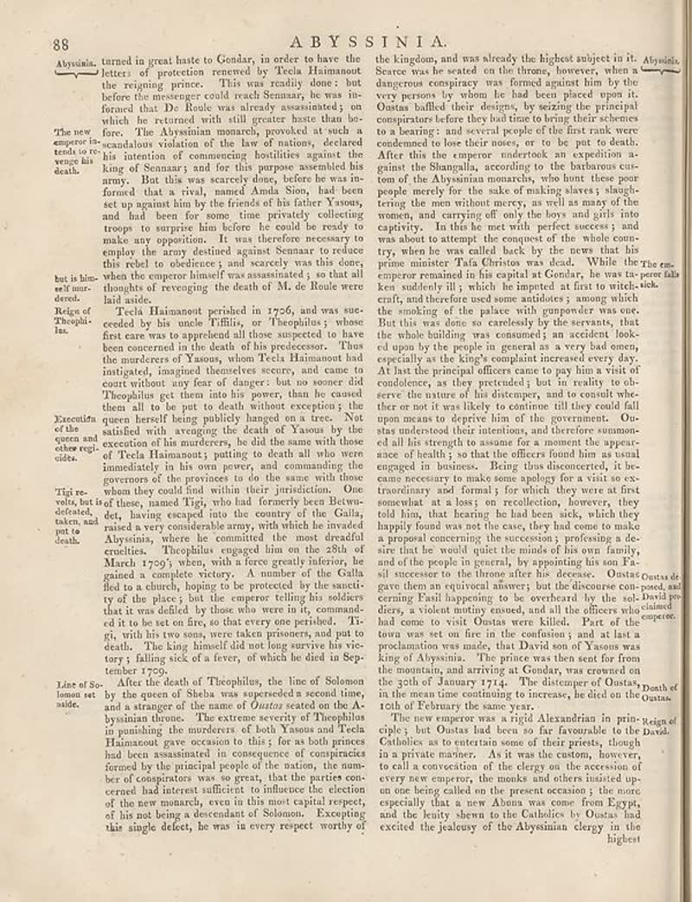

page-2570-364adfefc0b1.jpg

Page ID: britannica:309f765b1ecc83e0a7f7762e44b4a927a7555443:train:2570
Running head: 88 ABYSSINIA.
Image SHA-256: 364adfefc0b17833777e04973fd5d32fe490446622be257cba01f40a110e77ae

(untitled) [?]
Abysinia. The new amperor in- texts to revenge la death. Executive of the queen and other regt- side. Tigi re- whis, but is defecate, taken, and put to death. Lice of So- lonon set aside. After the death of Theophilus, the line of Solomon by the queen of Sheba was superseded a second time, and a stranger of the name of _Outsay seated on the Abyusina theme._ The extreme severity of Theophilus in punishing the murderers of both Yasuous and Techa Hanamout gave occasion to this, for all the prime had been assassination in consequence of compatriots formed by the principal people of the nation, the number of congriators was as great, that the parties con-cerned had interns sufficient to influence the election of the new monarch, even in this most capital respect, of his not being a descendant of Solomon. Excepting this single defect, he was in every respect worthy of the kingdom, and was already the highest subject in it. Abysinia. Source: was he seated on the throne, however, when a dangerous conspiracy was formed against him by the very person by whom, he had been given upon it. Oostas halloff over designs, by starting the principal conspirator before they had time to bring their schemes to a learning; and several people of the life tank were condemned to bear their money, or to be put to death. After this the emperor undertook an expedition at ganas in Shangulla, according to the behaviour cust- om of the Abysanian romarhets, who hunt these poor people merely for the sake of making always s singhtering the men without mercy, as well as many of the women, and carrying off only the boys and girls into captivity. It has the met with perfect success; and was about to attempt the complex of the death coun- try, when he was called back by the news that his prime minister Paid Division was dead. While the one emperor remained in his canal at Gather, her was the premia ken suddenly ill, which he imputed at first to witch- sick, until, the evidence used some additions, among which the null and therefore used Some addides, among which staffers are unclear. But this was done so carelessly by the servants, that the whole building was consumed in accident look- of upon by the people of general as a very bad mean, especially as the king's complaint increased every day. At last the principal officers came to pay him a visit of condolence, or they proceeded but its reality to ol- serve the nature of his distancy, and to consider whee ther or we did it was likely to continue, if they could fall upon means to deprive him of the government. Ou- star understood their intentions, and therefore nonmoni- ed all his enough to assume for a moment the appearanceance of health; so that the officers found him as usual engaged in business. Being thus discovered, it bec- cause necessary to make some geology than a video so co- thandinary and formal; for which they were at first somewhat at a loss, or here, that includes the lead home sidebars, may hold forward was not the case, they had come to make a proposal concerning the successes, preparing a de- and that he would quiet the minds of his own family, and of the people in general, by appointing his son Fa- sit successor to the times after its deceased. Oostas outra de gave them an equivocal answer; but the discourse can-pool, and cerning Pasil happening to be overvalued by the ski through on dary, a violent worthy spread, and all the officers who <sup>called</sup> had come to visit Oustas were killed. Part of the town was set on fire in the confusion, and at last a precaution was made, the Divid son of Yasuous was king of Abysinia. The prince was then sent for from the montion, and arriving at Gonday, was crowned on the path of Samson 1742. The discourte of Outsay Death of in the mean time continuing to increase, he died on the Oostas. rol February the same year. The new supreme is a rigid Alexandrian in pin-legging of ciple; but Ostas had been so far favourable to the David. Catholics as to entertain some of their priest, though in a private manner. At it was the custom, however, to call a conviction of the clergy on the recession of every new company, the masks and others insisted up- on one being pulled on the present occasion; the more especially that a new Albuna was come from Egypt, and the leuty shawn to the Catholics by Oustas had excited the jalousy of the Abysinian clergy in the highest
Matched article: William Walbe (Wikipedia, revision 1332352382, re-rank score -4.6640625) · comparison